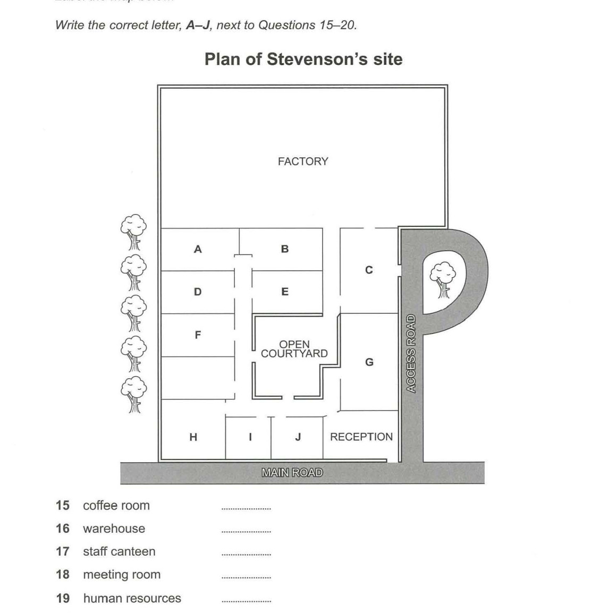

Cambridge IELTS 16
Time: approx. 30 minutes
Instructions
Digital recreation of Cambridge IELTS Listening Test 1.
Type answers in the gaps. Click options for multiple choice.
Print this page for paper-like practice.
Complete the notes below. Write ONE WORD AND/OR A NUMBER for each answer.
Questions 11–14: Choose A, B or C. Questions 15–20: Label the plan A–J.

Questions 21–22 and 23–24: Choose TWO A–E. Questions 25–30: Matching A–H.
Click to select (max 2)
Click to select (max 2)
Complete the notes below. Write ONE WORD ONLY for each answer.
IELTS Listening Test 1 • Cambridge IELTS 16 • Practice recreation (content from official PDF)